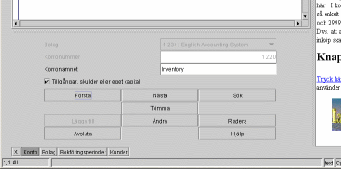
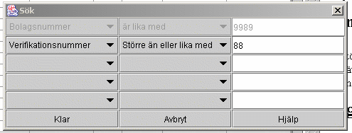

|
|
Denna beskriver hur man navigerar igenom databasen med inmatningsformulären. Nedan kommer ett exempel på kontoinmatningsformulären.

Alla dessa inmatningsformulär finns längst ned i huvudfönstret. Lägg märke till att knappen 'konto' är vald bland alla knappar på botten i huvudfönstret. Det var denna knapp jag tryckte på för att visa kontoinmatningsformulären. Jag kunde har använt vilket inmatningsformulär som helst för detta exempel eftersom alla fungerar likadant.
Inmatningsknapparna
De här knapparna tillåter dig att bläddra mellan posterna och göra vilken uppdatering eller radering av posterna som du vill.
Först
Om du vill bläddra igenom dina poster, måste denna knapp (eller sök knapp som beskrivs nedanför) användas först. Du kan inte se någonting, annars. Denna knapp tar dig till den första posten i listan. Om det inte finns några poster i listan blir fönstret tomt efter detta.
Nästa
Denna knapp kan användas bara efter Först eller Sök. Med denna knapp kan du bläddra framåt igenom alla poster. När du kommer till den sista posten i listan, blir skärmen tom och du måste börja om igen med Först eller Sök.
Sök
Detta ger dig chansen att hitta specifika poster i databasen. Med denna dialogruta kan du specificera sökvillkor för en sökning i databasen. Den visar en eller flera fält att söka i. Om du lämnar mittenfältet på tomt då används ej detta fält i sökningen. Välj en jämförelsetyp i mittenfältet och ange sedan det du ska jämföra med i den högra kolumnen och ett fält att söka på i den vänstra kolumnen.

. Åfter att du har tryckt på 'Klar', tryck på 'nästa' knapp för att se flera poster.Tömma
Detta tömmer skärmen. Det kan underlätta vissa moment men det är ej nödvändigt.
Lägga till
Efter att du har matat in all information, ska du trycka på denna knapp för att lägga till information permanent i databasen.
Ändra
Efter att du har använt Först-, Sök-, och Nästa knapparna för att hitta en specifik post, kan du sedan ändra posten här.
Radera
Efter att du har använt Först-, Sök-, och Nästa knapparna för att hitta en specifik post, kan du sedan radera posten här. Det är farligt att radera posterna eftersom en post kan länkas med flera andra poster och då kan flera andra poster blir fördärvade av att du tar bort en post. Var säker på att du vet vad du gör.
Avsluta
Stäng fönstret.
Hjälp
Här kommer du till information som kan hjälpa dig.
|
|
Copyright 2002 Lazy Eight Data HB